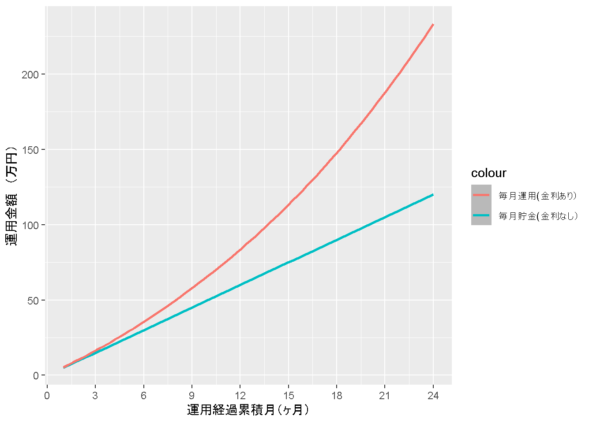
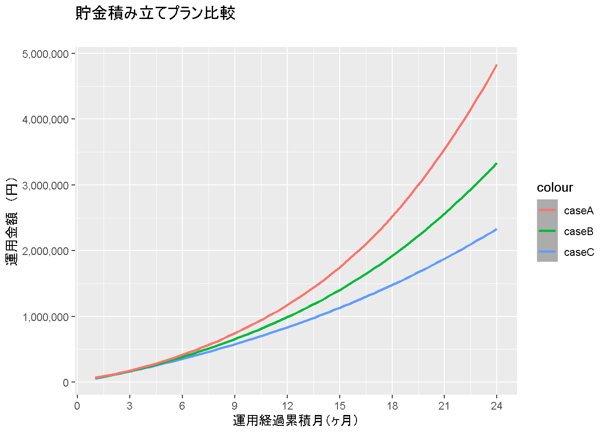
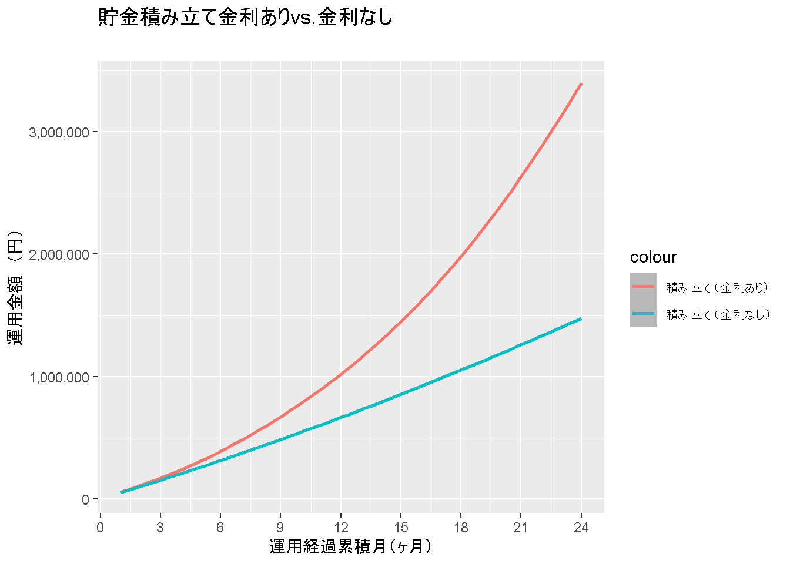

こんにちは！
最初に言っておきますが、今回は資産運用計画をRで計算しようとしましたが、上手く出来ませんでした。
その理由は、いくつかありますが、特に
というのが主な原因です。また、知識を身に着けてから再チャレンジしたいですね！
なので、今日は完全に分析半ばで記事が終わります！ (若干の書き捨て感が否めないので、あとで分かりやすいよう書き直します！)
それでもいいという優しい方、一緒にコードを見ていきましょう！
複雑な資本の運用計算をRで簡単にすませたい！！
今回エクセルではなく、R言語で計算したいと思った理由は、いくつかのケースを並行して考えたかったからです。 例えば、利子率を変化させてその計画自体を比較したり（例：投資する資産を変える）、時間によって利子率が変動するパターンもシミュレーションしたかったからです。
こんな感じで、いくつかの変数の組み合わせを数十年というスパンで分析したい！と思うと、エクセルだとなかなか厳しかったので、Rを使って分析してみました。
version## _
## platform x86_64-w64-mingw32
## arch x86_64
## os mingw32
## system x86_64, mingw32
## status
## major 4
## minor 0.3
## year 2020
## month 10
## day 10
## svn rev 79318
## language R
## version.string R version 4.0.3 (2020-10-10)
## nickname Bunny-Wunnies Freak OutPackages <- c("tidyverse", "ggplot2", "DT", "scales")
lapply(Packages, library, character.only = TRUE)interest rateは、期末に支払われる。まず、最初は単純化した条件で計算してみます。
m <- 1:24 # 1か月目から、24か月目の期末まで
ms <- rep(50000, length(m)) # 毎月5万円の積み立て
r <- rep(0.05, length(m)) # 5%の利子率（固定）
ms_r <- ms * (1 + r) # 毎月の積立金額 * 利子率
cum_ms <- cumsum(ms) # 金利なしver.の貯金額を知りたい
cum_ms_r_moment <- (50000 * (1.05) - (50000 * 1.05 ^ (1:24 + 1))) / (1 - 1.05) # その時の運用額累計を表示したい
percent <- cum_ms_r_moment / cum_ms # 金利ありｖｓ金利なしを比較したい
n <- 24:1 # 貯金開始１か月目の貯金額に対しては24回金利のcompoundがある
r2 <- (1 + r / 12) ^ sort(length(n):1, decreasing = TRUE) # 2年後の視点から見て、毎月の金利が結果いくらになるのか知りたい
ms_r2 <- ms * r2 # 毎月の積立金額 * 利子率
cum_ms_r2_future <- cumsum(ms_r2) # 24か月目の項目以外は無視plan <- data.frame(m, ms, r, ms_r, cum_ms, cum_ms_r_moment, percent,
n, r2, ms_r2, cum_ms_r2_future) %>% round(digits = 2)
datatable(plan)ggplot(plan, aes(x = m)) +
geom_smooth(aes(y = cum_ms, color= "毎月貯金(金利なし）")) +
geom_smooth(aes(y = cum_ms_r_moment, color = "毎月運用(金利あり）")) +
scale_y_continuous(labels = comma) +
scale_x_continuous(breaks = seq(0, 24, by = 3)) +
xlab("運用経過累積月（ヶ月）") +
ylab("運用金額 （円）") +
labs(title = "貯金積み立て金利ありvs.金利なし",
subtitle = "金利ありだと、約100万の差ができる")FALSE `geom_smooth()` using method = 'loess' and formula 'y ~ x'
FALSE `geom_smooth()` using method = 'loess' and formula 'y ~ x'
saving_plan <- function(Month, Save, R) {
m <- 1:Month # １ヶ月目から、Monthヶ月目の期末まで
ms <- rep(Save, length(m))
r <- rep(R, length(m))
ms_r <- ms * (1 + r)
cum_ms <- cumsum(ms) # 金利なしver.の貯金額を知りたい
cum_ms_r_moment <- (Save * (1 + R) - (Save * (1 + R) ^ (m + 1))) / (1 - (1 + R)) # その時の運用額累計を表示したい
percent <- cum_ms_r_moment / cum_ms # 金利ありｖｓ金利なしを比較したい
n <- Month:1 # 貯金開始１か月目の貯金額に対してはn回金利のcompoundがある
r2 <- (1 + r / 12) ^ seq(length(n):1) # 2年後の視点から見て、毎月の金利が結果いくらになるのか知りたい
cum_ms_r_future <- cumsum(ms_r2) # Monthヶ月目の項目以外は無視
plan <- data.frame(m, ms, r, ms_r, cum_ms, cum_ms_r_moment, percent,
n, r2, cum_ms_r_future)
}df <- saving_plan(24, 5, 0.05) %>% round(digits = 2)
datatable(df)### 複数のプランをつくる。
A <- saving_plan(24, 50000, 0.05)
B <- saving_plan(24, 50000, 0.075)
C <- saving_plan(24, 50000, 0.1)
### 複数のプランを作る際に必要な項目に絞る
plans <- data.frame(A[1],A[6],B[6], C[6]) %>% as_tibble()
plans2 <- plans %>%
select(
Month = m,
caseA = cum_ms_r_moment,
caseB = cum_ms_r_moment.1,
caseC = cum_ms_r_moment.2
) %>%
round(digits = 2)
datatable(plans2)ggplot(plans2, aes(x = Month)) +
geom_smooth(aes(y = caseA, color = "caseC")) +
geom_smooth(aes(y = caseB, color = "caseB")) +
geom_smooth(aes(y = caseC, color = "caseA")) +
scale_y_continuous(labels = comma) +
scale_x_continuous(breaks = seq(0, 24, by = 3)) +
xlab("運用経過累積月（ヶ月）") +
ylab("運用金額 （円）") +
labs(title = "貯金積み立てプラン比較",
subtitle = "")FALSE `geom_smooth()` using method = 'loess' and formula 'y ~ x'
FALSE `geom_smooth()` using method = 'loess' and formula 'y ~ x'
FALSE `geom_smooth()` using method = 'loess' and formula 'y ~ x'
(そろそろエクセルじゃ限界か？)
interest rateは、期末に支払われる。R%を平均値とする正規分布に近似する複利に変える。(リスク資産で運用する場合を想定する。)Save万円で、変数Increase_byの等比数列とする。Monthヶ月）saving_plan2 <- function(Month, Save_first, Increase_by, R, SD) {
m <- 1:Month # 一か月目から、Monthか月目の期末まで
ms <- seq(Save_first, by = Increase_by, length.out = Month)
r <- rnorm(n = Month, mean = R, sd = SD)
ms_r <- ms * (1 + r)
cum_ms <- cumsum(ms) # 金利なしver.の貯金額を知りたい
cum_ms_r_moment <- (ms * (1 + R) - (ms * (1 + R) ^ (m + 1))) / (1 - (1 + R)) # その時の運用額累計を表示したい
percent <- cum_ms_r_moment / cum_ms # 金利ありｖｓ金利なしを比較したい
n <- Month:1 # 貯金開始１ヶ月目の貯金額に対してはn回金利のcompoundがある
r2 <- (1 + r / 12) ^ seq(length(n):1) # mヶ月後の視点から見て、毎月の金利が結果いくらになるのか知りたい
cum_ms_r_future <- cumsum(ms_r2) # Monthヶ月目の項目以外は無視
plan <- data.frame(m, ms, r, ms_r, cum_ms, cum_ms_r_moment, percent,
n, r2, cum_ms_r_future)
}plan3 <- saving_plan2(24, 50000, 1000, 0.05, 1) %>% round(digits = 2)
datatable(plan3)ggplot(plan3, aes(x = m)) +
geom_smooth(aes(y = cum_ms_r_moment, colour = "積み立て（金利あり）")) +
geom_smooth(aes(y = cum_ms, colour = "積み立て（金利なし）")) +
scale_y_continuous(labels = comma) +
scale_x_continuous(breaks = seq(0, 24, by = 3)) +
xlab("運用経過累積月（ヶ月）") +
ylab("運用金額 （円）") +
labs(title = "貯金積み立て金利ありvs.金利なし",
subtitle = "")## `geom_smooth()` using method = 'loess' and formula 'y ~ x'
## `geom_smooth()` using method = 'loess' and formula 'y ~ x'
とりあえず、関数と図をプロットできる形にはできたのですが、リスク資産のボラティリティや、グラフィックツールとしてのggplot2の知識が足りないと思うので、いったんここで、将来の運用戦略を練るのは、お休みしようと思います。
自作関数での分析は初めてに近かったため、学ぶことが多かったので簡単にまとめておきます。
今日もありがとうございました！
Adios!!
## パッケージを準備する
Packages <- c("tidyverse", "ggplot2")
lapply(Packages, library, character.only = TRUE)
## 変数を準備
m <- 1:24 # 1か月目から、24か月目の期末まで
ms <- rep(5, length(m))
r <- rep(0.05, length(m))
ms_r <- ms * (1 + r)
cum_ms <- cumsum(ms) # 金利なしver.の貯金額を知りたい
cum_ms_r_moment <- (5 * (1.05) - (5 * 1.05 ^ (1:24 + 1))) / (1 - 1.05) # その時の運用額累計を表示したい
percent <- cum_ms_r_moment / cum_ms # 金利ありｖｓ金利なしを比較したい
n <- 24:1 # 貯金開始１か月目の貯金額に対しては24回金利のcompoundがある
r2 <- (1 + r / 12) ^ sort(length(n):1, decreasing = TRUE)
#2年後の視点から見て、毎月の金利が結果いくらになるのか知りたい
ms_r2 <- ms * r2
cum_ms_r2_future <- cumsum(ms_r2) # 24か月目の項目以外は無視
## データフレーム化
plan <- data.frame(m, ms, r, ms_r, cum_ms, cum_ms_r_moment, percent,
n, r2, ms_r2, cum_ms_r2_future)
head(plan)
library(ggplot2)
## グラフ表示
ggplot(plan, aes(x = m)) +
geom_smooth(aes(y = cum_ms)) +
geom_smooth(aes(y = cum_ms_r_moment))
## データフレームを自動で作れる関数を作る
saving_plan <- function(Month, Save, R) {
m <- 1:Month # 一か月目から、24か月目の期末まで
ms <- rep(Save, length(m))
r <- rep(R, length(m))
ms_r <- ms * (1 + r)
cum_ms <- cumsum(ms) # 金利なしver.の貯金額を知りたい
cum_ms_r_moment <- (Save * (1 + R) - (Save * (1 + R) ^ (m + 1))) / (1 - (1 + R)) # その時の運用額累計を表示したい
percent <- cum_ms_r_moment / cum_ms # 金利ありｖｓ金利なしを比較したい
n <- Month:1 # 貯金開始１か月目の貯金額に対しては24回金利のcompoundがある
r2 <- (1 + r / 12) ^ seq(length(n):1) # 2年後の視点から見て、毎月の金利が結果いくらになるのか知りたい
cum_ms_r_future <- cumsum(ms_r2) # 24か月目の項目以外は無視
plan <- data.frame(m, ms, r, ms_r, cum_ms, cum_ms_r_moment, percent,
n, r2, cum_ms_r_future)
}
df <- saving_plan(24, 5, 0.05)
datatable(df)
## 複数のプランを比べる
### 複数のプランをつくる。
A <- saving_plan(24, 5, 0.05)
B <- saving_plan(24, 5, 0.075)
C <- saving_plan(24, 5, 0.1)
### 複数のプランを作る際に必要な項目に絞る
plans <- data.frame(A[1],A[6],B[6], C[6]) %>% as_tibble()
plans2 <- plans %>%
select(
Month = m,
caseA = cum_ms_r_moment,
caseB = cum_ms_r_moment.1,
caseC = cum_ms_r_moment.2
)
plans2
### グラフ化する
ggplot(plans2, aes(x = Month)) +
geom_smooth(aes(y = caseA)) +
geom_smooth(aes(y = caseB)) +
geom_smooth(aes(y = caseC))
# モデルを複雑化する
## 関数を作る
saving_plan2 <- function(Month, Save_first, Increase_by, R, SD) {
m <- 1:Month # 一か月目から、mか月目の期末まで
ms <- seq(Save_first, by = Increase_by, length.out = Month)
r <- rnorm(n = Month, mean = R, sd = SD)
ms_r <- ms * (1 + r)
cum_ms <- cumsum(ms) # 金利なしver.の貯金額を知りたい
cum_ms_r_moment <- (ms * (1 + R) - (ms * (1 + R) ^ (m + 1))) / (1 - (1 + R)) # その時の運用額累計を表示したい
percent <- cum_ms_r_moment / cum_ms # 金利ありｖｓ金利なしを比較したい
n <- Month:1 # 貯金開始１か月目の貯金額に対しては24回金利のcompoundがある
r2 <- (1 + r / 12) ^ seq(length(n):1) # mヶ月後の視点から見て、毎月の金利が結果いくらになるのか知りたい
cum_ms_r_future <- cumsum(ms_r2) # mか月目の項目以外は無視
plan <- data.frame(m, ms, r, ms_r, cum_ms, cum_ms_r_moment, percent,
n, r2, cum_ms_r_future)
}
###確認する
plan3 <- saving_plan2(24, 50000, 1000, 0.05, 1)
### グラフ化する
ggplot(plan3, aes(x = m)) +
geom_smooth(aes(y = cum_ms_r_moment, colour = "積み立て（金利あり）")) +
geom_smooth(aes(y = cum_ms, colour = "積み立て（金利なし）")) +
scale_y_continuous(labels = comma) +
xlab("ヶ月") +
ylab("円")